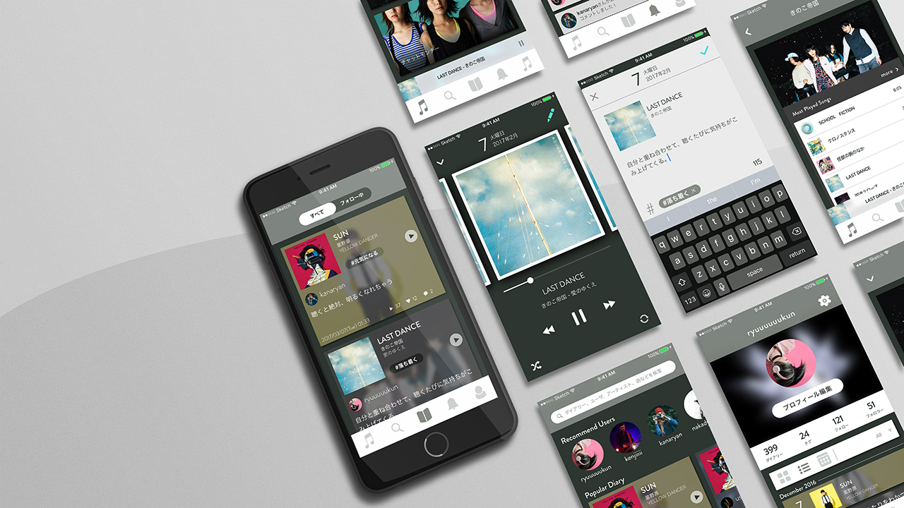
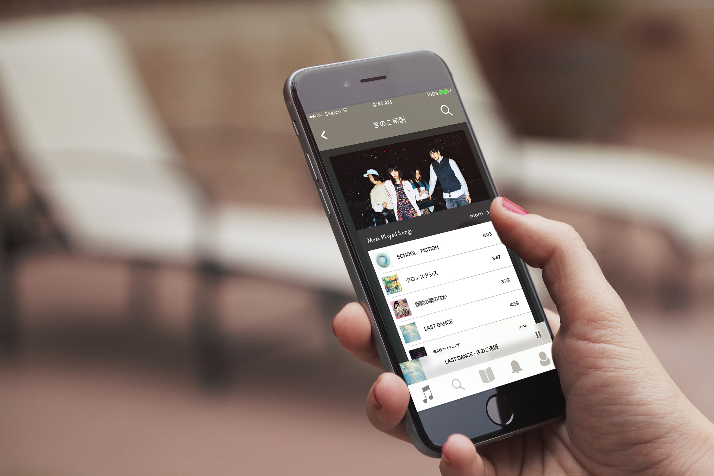

music diary
音楽の感動記録アプリ

what's music diary?
音楽を聴いていて、ふと感動を覚えることはありませんか。
不安から救ってくれた、傷ついた心を癒してくれた音楽の感動を記録し、振り返るアプリです。
今の自分を救ってくれた音楽を記録しておくことで、未来の自分がまた救われるかもしれません。
how to use

01
曲を選ぶ
アーティストやプレイリストから
聴きたい曲を選びましょう。
再生回数の多い曲を聴くと
感動を生みやすいかも。

02
感動する
聴いていてわずかでも感動したら
忘れないうちに記録しましょう。
右上の記録アイコンを押すか
アートワークを上にスワイプ。
03
記録する
感動した時の状況や思いを
一言日記のように綴りましょう。
思いの種類などをタグ付けすると
振り返る際に便利です。

04
振り返る
音楽の力が必要になったら
今までの感動を振り返ってみましょう。
自分以外の感動に触れることで
違った発見があるかも。